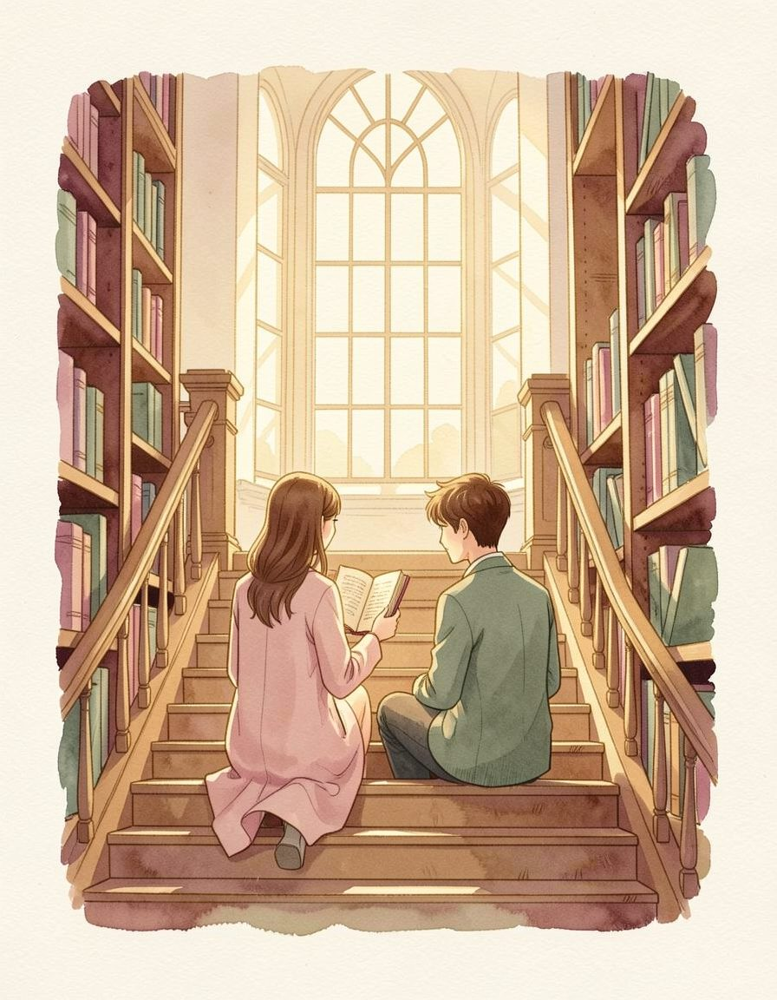
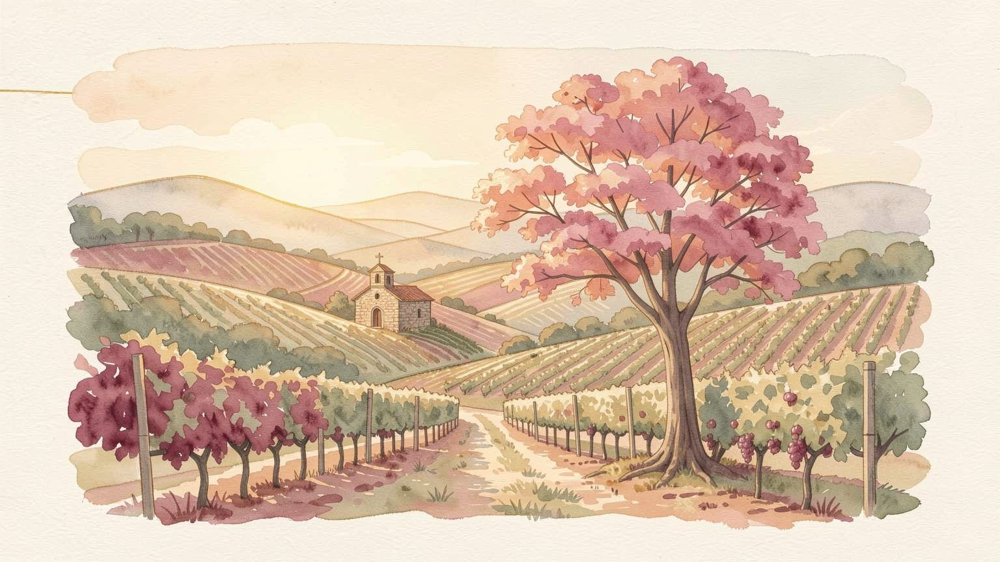
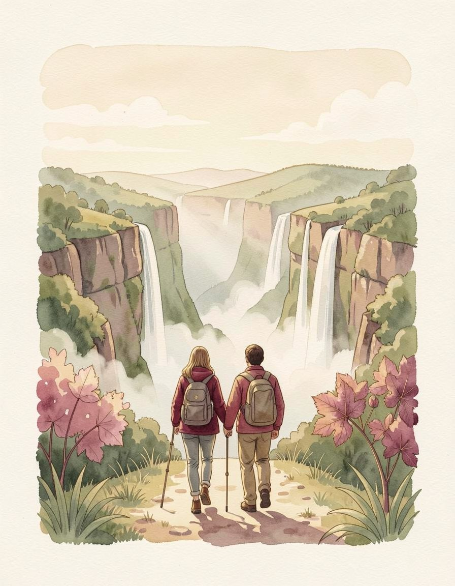
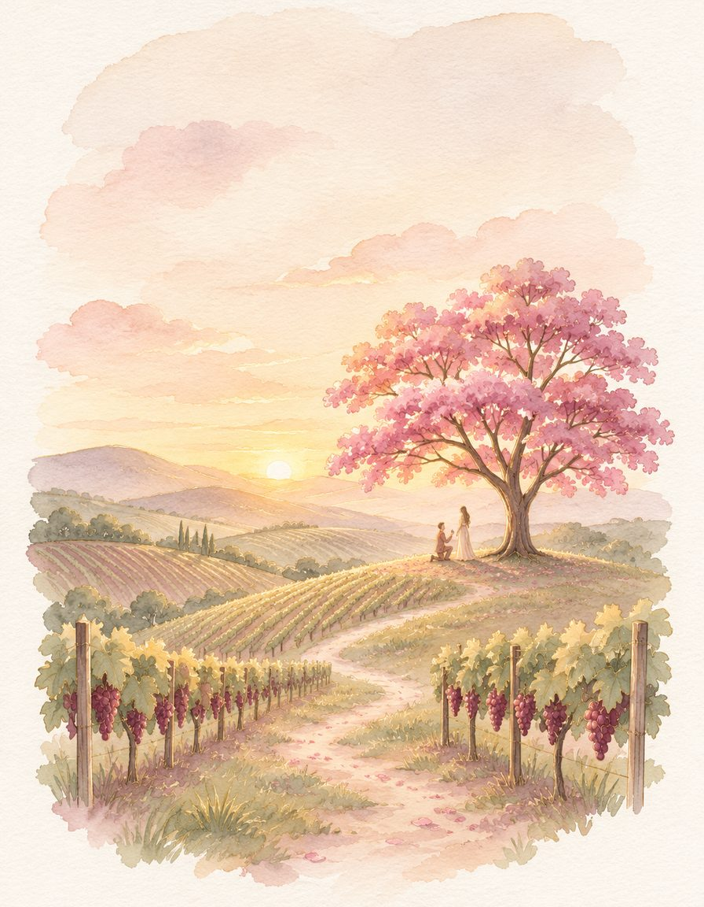
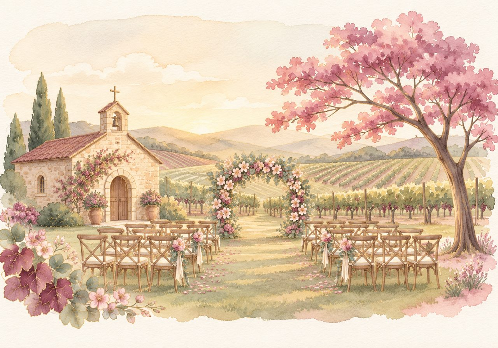
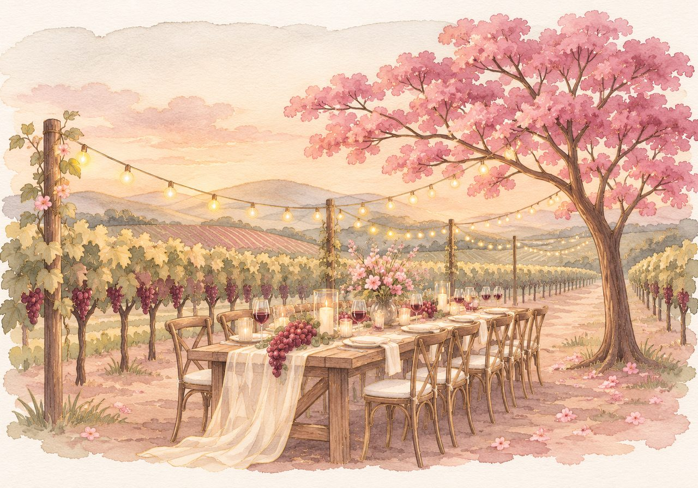
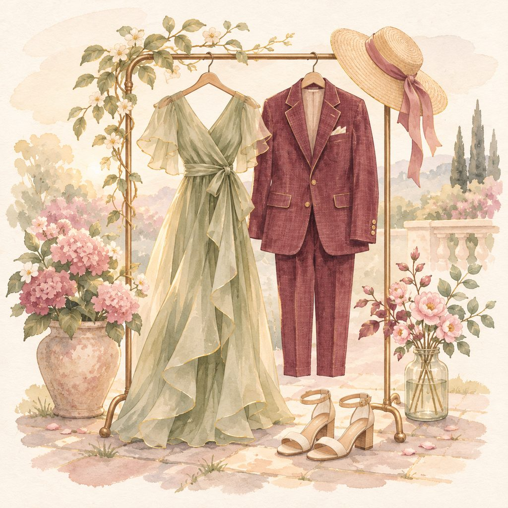
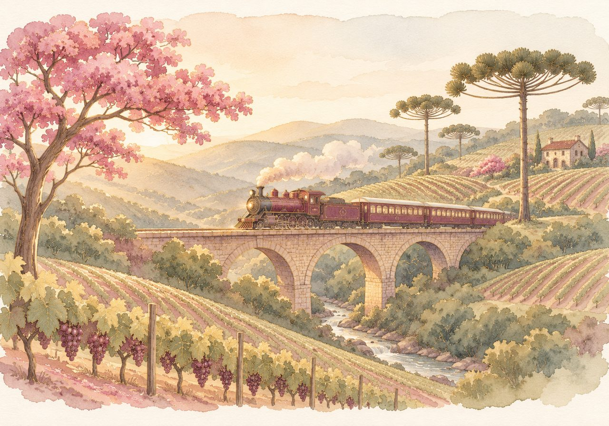

2019 · a biblioteca
Um único exemplar, duas mãos ao mesmo tempo. Ela ganhou o livro; ele ganhou o café depois.

Vale dos Vinhedos · serra gaúcha
Sábado, 15 de maio de 2027 · 16h
Nossa história
A gente se conheceu disputando o mesmo livro, se perdeu de propósito nos cânions e, um dia, debaixo de um ipê, resolveu que o resto seria junto.

2019 · a biblioteca
Um único exemplar, duas mãos ao mesmo tempo. Ela ganhou o livro; ele ganhou o café depois.

2022 · os cânions
A trilha era de quatro horas. Levamos sete, porque toda curva pedia uma parada.

2025 · o ipê
Ele ajoelhou, o ipê largou flores em cima dos dois, e a resposta veio antes da pergunta acabar.


O grande dia
Cerimônia ao ar livre ao lado da capela; se chover, tudo muda para o galpão de pedra, que tem lareira.
Traje
Tons de sálvia, vinho, areia e terracota combinam com o vale. Branco fica para a noiva.
Maio na serra vai de 10 °C a 20 °C: traga um casaco para a noite. Salto bloco ou sapato baixo, porque a cerimônia é na grama.

Como chegar
A Quinta fica no Vale dos Vinhedos, a cerca de 15 minutos do centro de Bento Gonçalves (RS).
De Porto Alegre são cerca de 2 horas pela serra. Estacionamento na Quinta, com manobrista.
Aeroporto de Caxias do Sul é o mais perto (cerca de 1 hora). Porto Alegre tem mais voos e fica a 2 horas.
Ônibus dos noivos sai do centro de Bento às 15h e volta a cada hora a partir das 23h.
Reservamos quartos com tarifa de convidado em três pousadas do vale. O código vem na confirmação.
Confira se seu país precisa de visto e chegue um dia antes: a estrada da serra é bonita, mas sinuosa.
Fale com a Bia, nossa cerimonialista, pelo mesmo botão de confirmar presença.
Para aproveitar a serra

O passeio de trem entre Bento Gonçalves, Garibaldi e Carlos Barbosa, com música e degustação no caminho.
Casas de pedra dos imigrantes italianos, queijarias e cantinas em estrada de chão.
A cerca de 1h30 de carro, para quem quer esticar a viagem.
Confirmar presença
Número de exemplo: este site é uma demonstração.